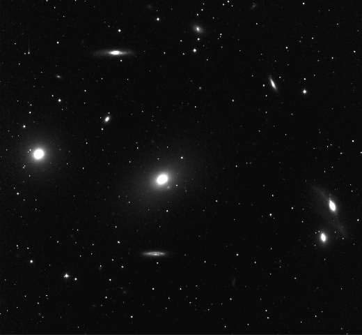

I am a sophomore (class of 2025) astrophysics major at Rice University. This project was created, carried out, and presented for my Astronomy Lab (ASTR230) final project. I was also taking Introduction to Astrophysics: Galaxies and Cosmos (ASTR360), which inspired my project.
NGC4438 is a particular looking galaxy, whose classification has been debated by many researchers. It is said to have interacted with NGC4435 in the past and the pair are referred to as the Markarian Eyes. Some identify NGC4438 as a spiral galaxy, while others identify it as an elliptical galaxy. A total of 51 images were taken remotely using the .8 m telescope at McDonald Observatory to create color gradient graphs for the B-V, B-R, and B-Hα bandpasses. Using the color gradients of NGC4438 and the five other galaxies that already had clear Hubble Sequence classifications, I attempted to identify NGC4438. Unfortunately, I was not able to get conclusive results.
Normally, a galaxy that cannot be categorized is considered an irregular galaxy. It is also common for interacting galaxies to be catgorized as irregular galaxies. However, NGC4438 has never been categorized as one; there is only debate of whether it is a spiral or elliptical galaxy. This intrigued me so I wanted to see if I could identify the spiral or elliptical characteristics in the color gradient of NGC4438 that causes it to not be irregular.
A Portion of The Markarian Chain: M86, M84, NGC4438, NGC4435, and other galaxies.